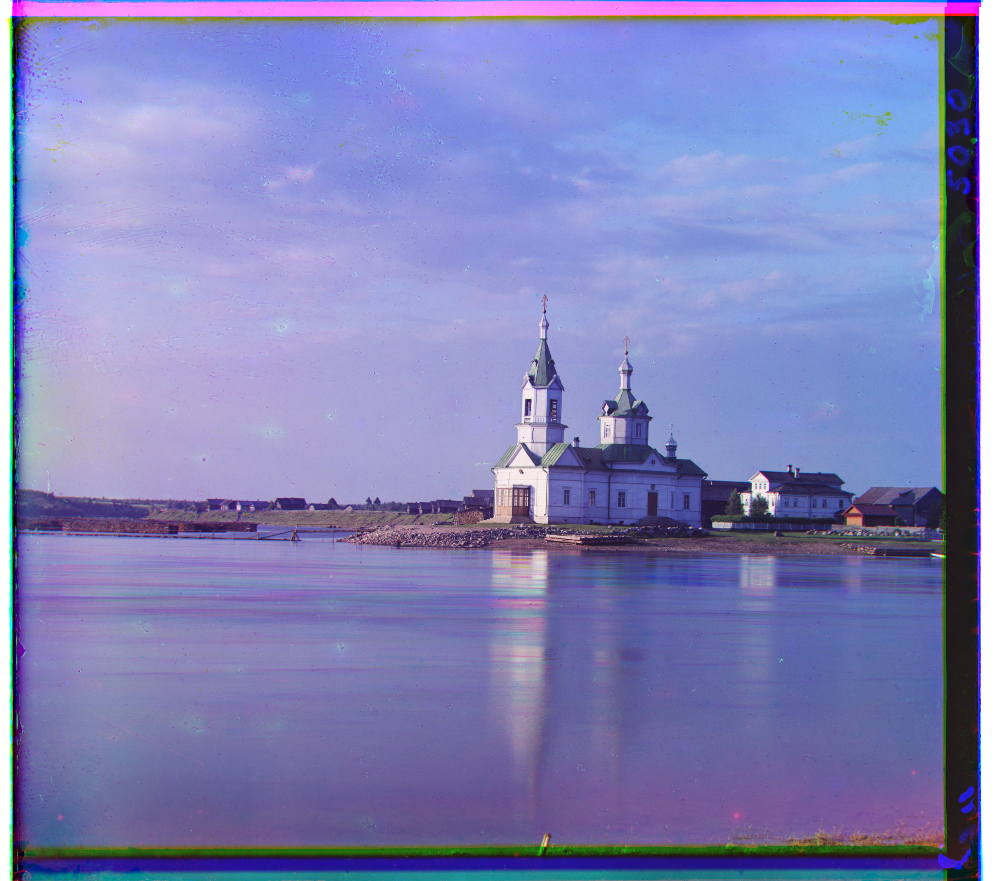
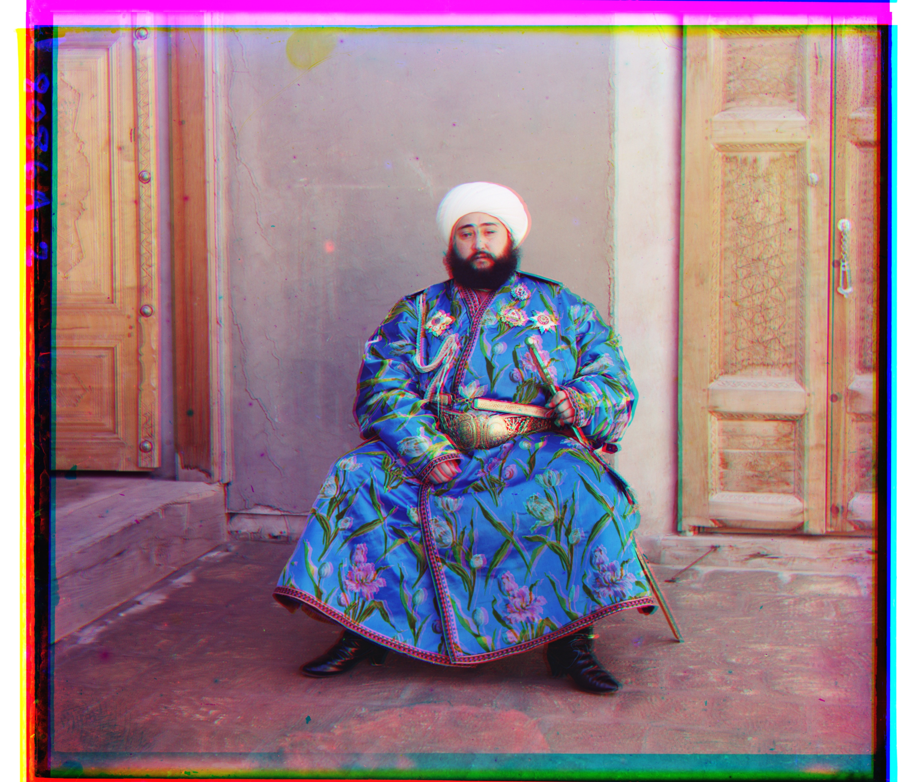
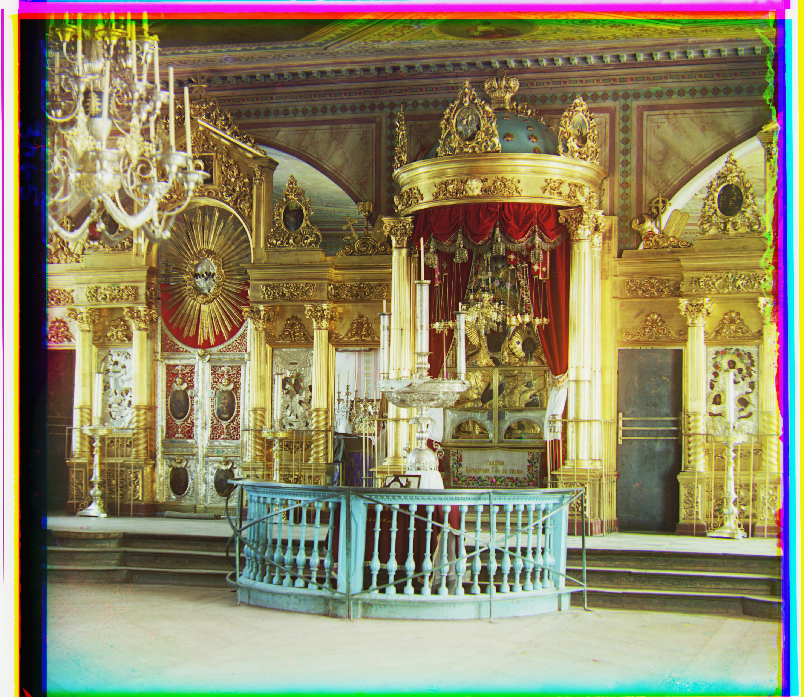
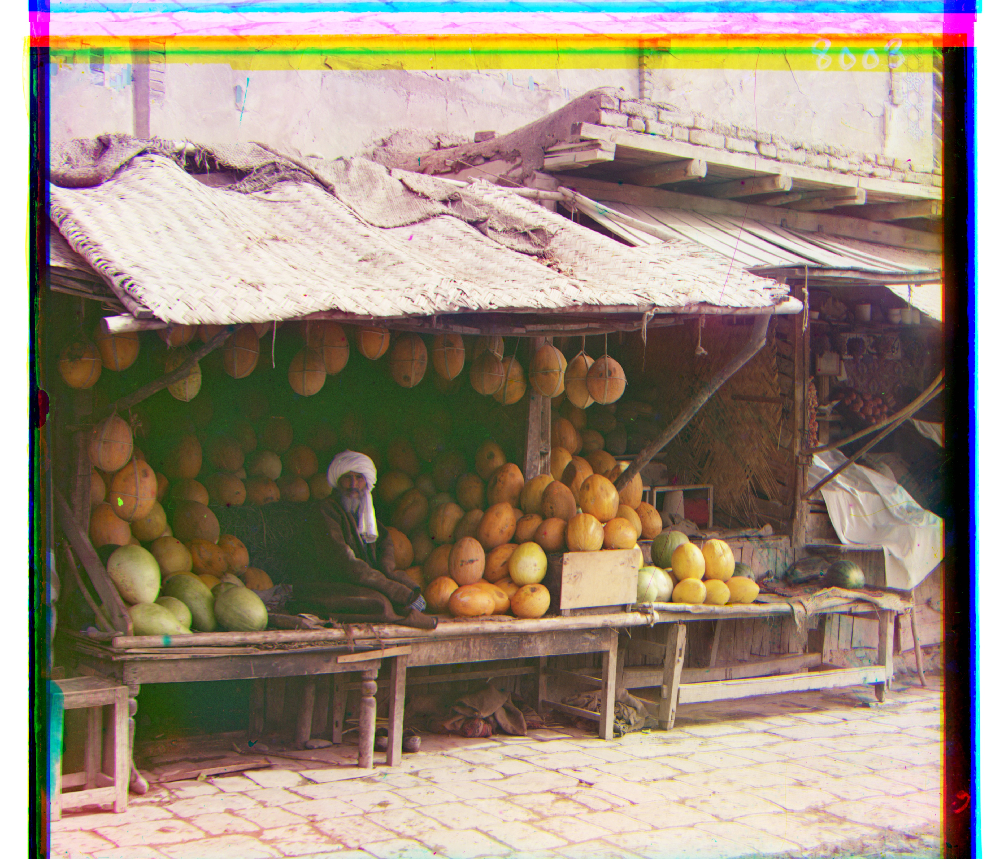
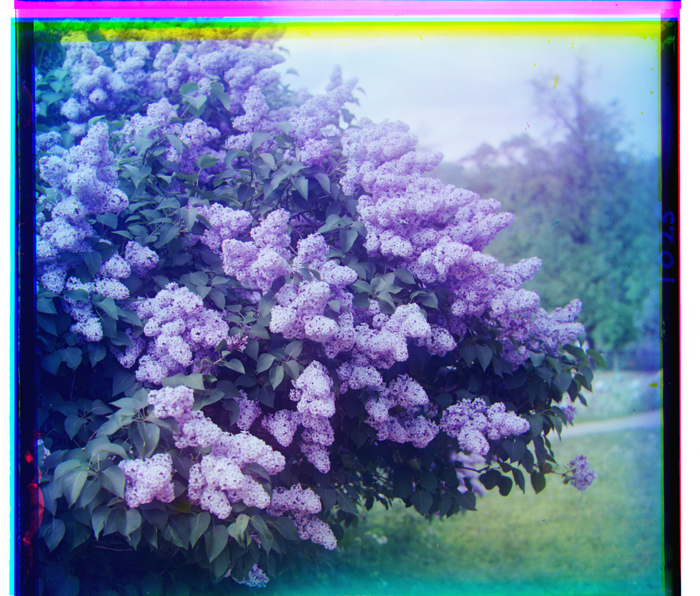
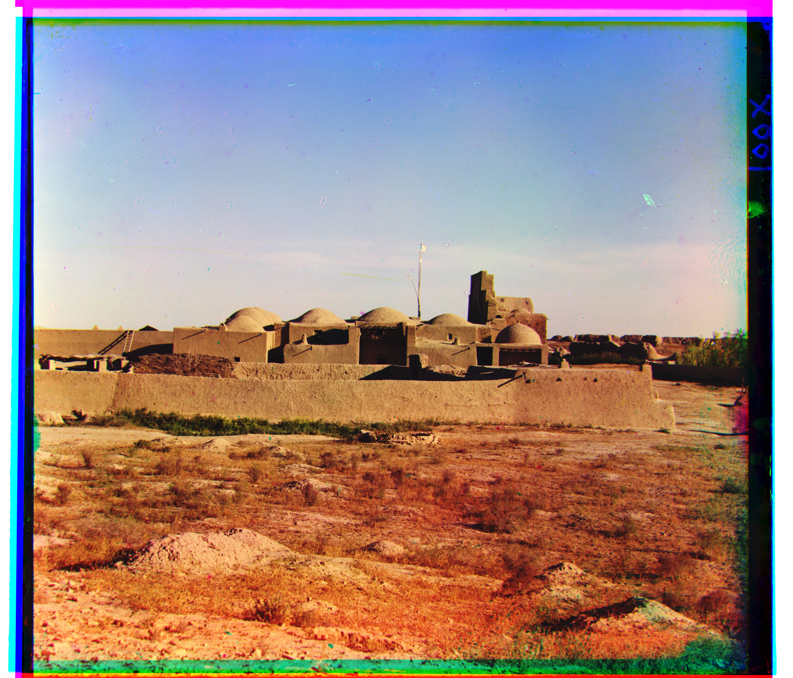
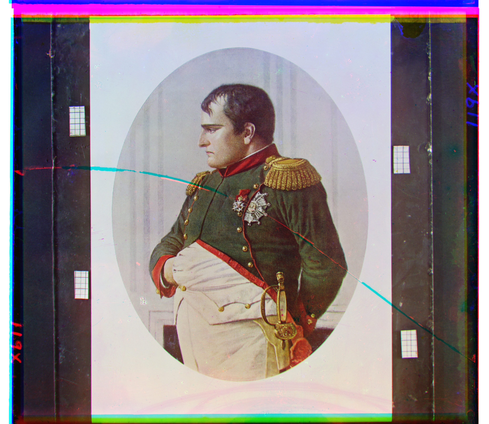
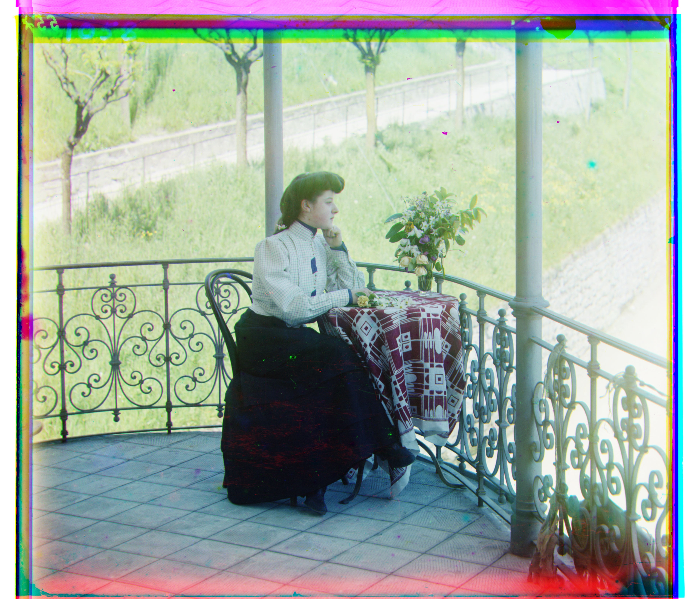

Overview
Sergei Prokudin-Gorskii photographed the Russian Empire in the early 1900s by exposing three glass plates of the same scene through red, green, and blue filters. Digitized, each plate is a single grayscale image stacked in three bands (B, G, R from top to bottom). Stack the bands directly and the color fringing is obvious — the plates were never perfectly aligned when shot. This project reconstructs the color photo by searching for the horizontal and vertical shift that best aligns the R and G channels onto the B channel: an exhaustive window search for the small low-res JPEGs, and a coarse-to-fine image pyramid for the much larger TIFF scans.
Approach
Single-scale search. For a displacement window of
[-15, 15] pixels in x and y, shift one channel (with
np.roll) against the reference channel and score the overlap with
normalized cross-correlation (NCC), computed after cropping 10% off each
border so filter-edge artifacts don't dominate the score. Keep the
displacement with the best score.
Multiscale pyramid. The high-res scans are too large for a
brute-force [-15, 15] search at full resolution. Build a Gaussian
pyramid (downsample by 2 at each level via cv.pyrDown) down to a
base case under 100px, align at the coarsest level first, then double the
recovered offset at each finer level and refine with a smaller
[-8, 8] window around it.
def ncc(im1, im2):
mc1 = im1 - np.mean(im1)
mc2 = im2 - np.mean(im2)
return np.sum(mc1 * mc2) / (np.linalg.norm(mc1) * np.linalg.norm(mc2))
def align(im, ref, window=15):
crop_im = crop_border(im)
crop_ref = crop_border(ref)
best_ncc = -np.inf
dx, dy = 0, 0
for x in range(-window, window+1):
x_roll = np.roll(crop_im, x, axis=1)
for y in range(-window, window+1):
curr_ncc = ncc(np.roll(x_roll, y, axis=0), crop_ref)
if curr_ncc > best_ncc:
best_ncc = curr_ncc
dx = x
dy = y
return (dy, dx)
def crop_border(im, pct=10):
crop_y = int(round(im.shape[0] * (pct/100.0)))
crop_x = int(round(im.shape[1] * (pct/100.0)))
return im[crop_y:im.shape[0] - crop_y, crop_x:im.shape[1] - crop_x]
def pyramid_align(im, ref, levels=3, window=15):
if levels == 0 or im.shape[0] < 100 or im.shape[1] < 100:
return align(im, ref, window)
down_im = cv.pyrDown(im)
down_ref = cv.pyrDown(ref)
pyr_align = pyramid_align(down_im, down_ref, levels - 1, window)
al = (pyr_align[0]*2, pyr_align[1]*2)
alim = np.roll(np.roll(im, al[0], axis=0), al[1], axis=1)
residual = align(alim, ref, 8)
return (al[0] + residual[0], al[1] + residual[1])Full source: code/align.py.
Part 1: Single-Scale Alignment (low-res JPEGs)
Exhaustive [-15, 15] search on cathedral.jpg,
monastery.jpg, and tobolsk.jpg.


| Image | G offset (y, x) | R offset (y, x) |
|---|---|---|
| cathedral.jpg | (5, 2) | (12, 3) |
| monastery.jpg | (-3, 2) | (3, 2) |
| tobolsk.jpg | (3, 3) | (6, 3) |
Part 2: Multiscale Pyramid Alignment
Coarse-to-fine pyramid alignment run on all 11 provided .tif examples,
with the computed offsets for each listed below.











| Image | G offset (y, x) | R offset (y, x) |
|---|---|---|
| church.tif | (25, 4) | (58, -4) |
| emir.tif | (49, 24) | (103, 56) |
| harvesters.tif | (60, 17) | (124, 14) |
| icon.tif | (41, 17) | (90, 23) |
| ilemselga.tif | (40, 7) | (130, 11) |
| melons.tif | (82, 10) | (176, 12) |
| religous_painting.tif | (28, 3) | (68, 7) |
| self_portrait.tif | (79, 29) | (176, 37) |
| siren.tif | (49, -6) | (96, -25) |
| three_generations.tif | (53, 14) | (112, 11) |
| wharf.tif | (15, -7) | (83, -16) |
Part 3: Selected Images
Three additional plates chosen from the full Prokudin-Gorskii collection at the Library of Congress.
TODO: say why you picked these three (subject matter, expected difficulty, interesting failure modes, etc.).



| Image | G offset (y, x) | R offset (y, x) |
|---|---|---|
| mosque.tif | (32, 4) | (79, 7) |
| napoleon.tif | (63, 5) | (133, -2) |
| woman.tif | (38, 21) | (76, 35) |
Failures & Bells and Whistles
TODO: discuss any images where alignment failed and why (e.g. NCC getting fooled by borders or exposure differences), and describe any extras implemented — automatic border cropping, contrast/edge-based alignment instead of raw pixels, etc. — with before/after comparisons.